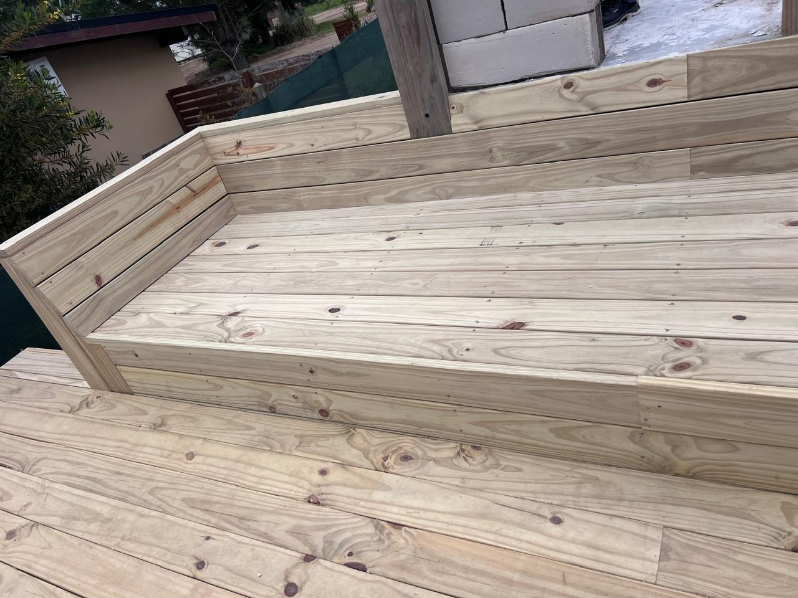
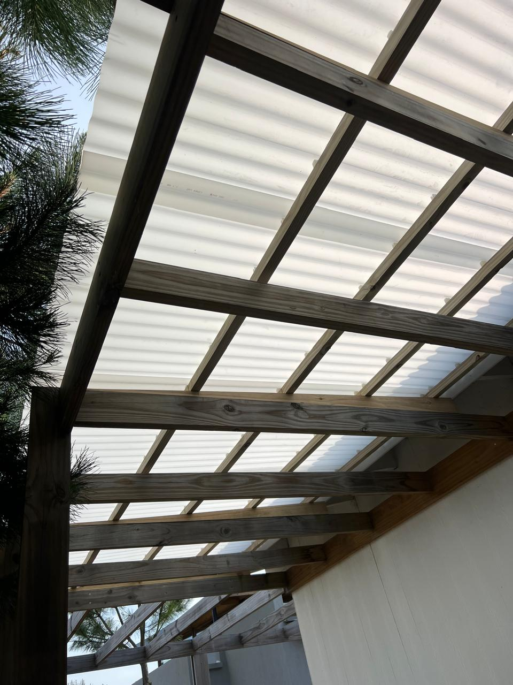
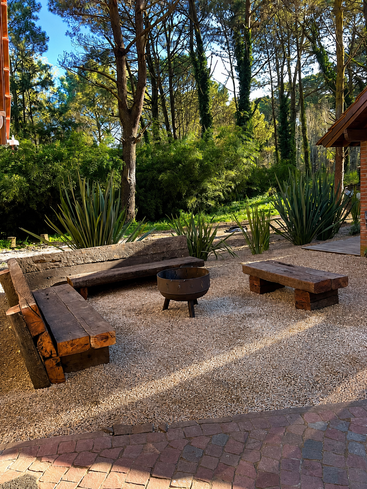

Construimos el afuera
que querés vivir.
Soluciones en madera pensadas para cada espacio, cada uso y cada paisaje.
01
Decks y entablonados
Diseñamos superficies que conectan la casa con el exterior. Trabajamos encuentros, niveles, bordes y circulaciones para lograr un resultado cómodo, sólido y visualmente limpio.
- Decks para piscinas y jardines
- Pasarelas, expansiones y terrazas
- Bancos y mobiliario integrado
- Reparación y reemplazo de tablas

02
Pérgolas y estructuras
Estructuras con presencia, proporción y detalle. Adaptamos cada proyecto a la arquitectura existente, la orientación del sol y la forma en que se va a usar el espacio.
- Pérgolas independientes o adosadas
- Galerías y cubiertas traslúcidas
- Cercos y portones de madera
- Estructuras en madera tratada
- Terminaciones y protección exterior

03
Mantenimiento exterior
Recuperamos y protegemos superficies expuestas al sol, el agua y el uso cotidiano. Evaluamos el estado real para aplicar el tratamiento adecuado y extender su vida útil.
- Limpieza profunda y lijado
- Protección con aceites y lasures
- Recuperación de decks y pérgolas
- Mantenimiento preventivo programado
